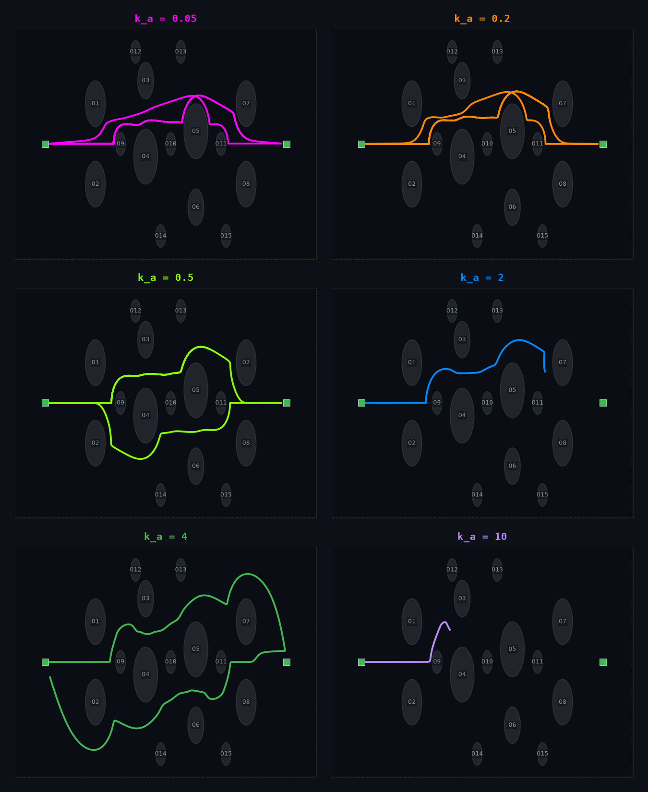

2D Corridor Path Planning
APF-based slalom navigation through a dense obstacle corridor (Y ∈ [−5, 5], X ∈ [−15, 15]). A hand-designed slalom layout forces close-quarters zigzag navigation through 15 obstacles. Gain sweep analysis, Monte Carlo validation, and sensitivity characterization reveal how k_avoid affects path tightness and success.
Simulation Features
Slalom Corridor Layout
Fifteen obstacles arranged in four staggered gates force a zigzag path through the corridor. Small centerline blockers between gates reinforce the slalom, requiring precise APF guidance at each turn.
Close-Quarters Navigation
The drone weaves through gaps as narrow as 1.3m between obstacles, clearing edges by fractions of a meter. Speed and heading change rapidly at each gate as APF repulsion steers through tight passes.
Gain-Dependent Path Variation
Low k_avoid (0.05) cuts corners inside each gate, grazing obstacle edges. High k_avoid (>4) takes wide, cautious arcs. The gain sweep overlay and faceted grid show how each gain negotiates the same slalom differently.
Gain Sweep Overlay
Trajectories for ten values of k_avoid through the same slalom layout. Low gains (0.05–0.2) cut inside each gate, taking the tightest line. Mid-range gains (1–4) track a clean slalom. High gains (6–10) take wide, cautious arcs that bulge outward between gates.
Faceted Trajectory Comparison
Each panel isolates a single gain value. Obstacles are numbered O1–O15 as white filled circles. The corridor boundaries (amber dashes) and start/goal markers (green squares) are consistent across all panels. A summary table below maps each gain to its behavioral outcome.

Results Summary
| k_a | Gates Reached | Y Span | Worst Clearance | Behavioral Summary |
|---|---|---|---|---|
| 0.05 | All 4 + goal | 2.1 m | 0.17 m (O11) | Hugs inside edges of every gate, grazing O11 by 17 cm. Fast passage but minimal safety margin. Path stays almost entirely in the upper half of the corridor. |
| 0.2 | All 4 + goal | 2.3 m | 0.29 m (O11) | Slightly wider than 0.05, still cuts corners aggressively. Remains in the upper half of the corridor. Clearance improves but is still below the 0.5 m caution threshold at O11. |
| 0.5 | All 4 + goal | 4.9 m | 0.40 m (O11) | First gain to cross the corridor centerline (y goes to −2.4 m). Begins showing a true zigzag pattern as repulsion is strong enough to deflect the drone downward between gates. |
| 2 | Gates 1–3 | 2.7 m | 0.60 m (O9) | Stalls at x = 6.2 m, never reaches gate 4. After passing gate 3 the drone drifts upward and encounters a local equilibrium between attraction toward the goal and repulsion from O11 and O7/O8. Velocity drops near zero. |
| 4 | All 4 + goal | 7.6 m | 0.41 m (O11) | Optimal gain. Full zigzag through all gates with wide, clean arcs. The repulsion is just strong enough to deflect into each gate opening without overshooting. The drone completes the course with the widest y-span and best combination of clearance and efficiency. |
| 10 | Gate 1 only | 1.7 m | 0.17 m (O9) | Repulsion overwhelms attraction immediately. The drone is pushed back toward the start after passing gate 1, never reaching gate 2. Total forward progress is only 3.2 m. The APF field near O1/O2 creates an impassable barrier. |
Clearance per Gain
Minimum Euclidean clearance from the drone to each obstacle over the full trajectory, per gain value. Low gains (0.05–0.2) brush within centimeters of obstacle edges as they cut inside the gates. Higher gains maintain a wider safety margin. The red dashed line marks the 0.5m caution threshold.
Analysis. At very low gains (k_a ≤ 0.2) the drone scrapes within 0.17–0.29 m of O11 (the centerline blocker at x = 5.5). Gains 0.5–4 maintain a safer 0.40 m+ minimum. The 0.5 m caution threshold is crossed by most gains, though no gain results in collision (clearance < 0 m) for this layout. The narrowest passages consistently occur at the three centerline blockers (O9, O10, O11) and the gate obstacles (O1–O8), where the drone must balance attraction and repulsion through gaps as narrow as 1.3 m. Gain k_a = 2 shows anomalously high clearance (0.60 m at O9) because it stalls before reaching the tightest passages at gate 4.
Clearance Trade-Study Heatmap
Trade-study matrix correlating GNC safety margins across all 10 gain values and 15 obstacles. This heatmap identifies exactly which obstacles act as critical bottlenecks for each control regime. Red and orange cells denote violations of the 0.5m safety limit, yellow indicates marginal clearance, and green indicates safe passage.
Analysis. The heatmap reveals a clear transition between behavioral regimes. At low gains (k_a ≤ 0.2), safety violations are heavily concentrated at O11 (the centerline blocker between gates 3 and 4) and Gate 1 obstacles (O1, O2). As k_a increases, clearance systematically improves across all obstacles. At the optimal gain (k_a = 4), every single obstacle is navigated with a healthy margin, showing no red or orange cells. For extremely high gains (k_a ≥ 6), the heatmap shows high clearance on later obstacles (O5–O15) simply because the drone is repelled backwards and never reaches them, which is represented by empty or safe values.
Speed Profile Overlay
Instantaneous speed over time for each gain. Low-gain trajectories maintain near-cruise speed through the slalom. High-gain trajectories brake through each gate, then accelerate in the straightaways between them.
Analysis. Low gains (0.05–0.5) maintain near-cruise speed (3 m/s) through the entire course, slowing only slightly at each gate. At k_a = 2 the drone stalls at x ≈ 6.2 m (t ≈ 17 s), where velocity drops to near zero as APF forces reach a local equilibrium – the attraction toward the goal is balanced by repulsion from O11 and gate 4 obstacles. Gains 3–4 show clean acceleration/deceleration cycles at each gate crossing, with speed dipping at each tight passage and recovering in the open segments between gates. At k_a ≥ 6 the drone never escapes gate 1’s repulsion field; speed peaks briefly then decays as the drone is pushed back toward the start.
Speed-Space Phase Portrait
Phase-space portrait plotting instantaneous speed versus continuous X-position along the corridor. This representation highlights the spatial location of braking actions. Vertical amber-tinted bands indicate the exact physical bounds of the four slalom gates (x = -7, -2, 3, 8).
Analysis. This spatial phase portrait maps velocity regulation directly to physical corridor geography. At the optimal gain (k_a = 4), we observe clear, periodic velocity valleys aligned precisely with the gate positions, showing systematic deceleration down to 1.5 m/s at gate entry followed by acceleration back to cruise velocity. The corner-cutter (k_a = 0.05) exhibits near-zero velocity regulation, cutting flatly across the gate zones. The stall regime (k_a = 2) is visible as a trajectory that enters Gate 3, then plunges vertically to zero speed at x = 6.2m, failing to recover.
Gate Performance Trade-off Dashboard
Segmented mission-phase performance dashboard. By breaking the continuous trajectory into discrete gate segments, this dashboard analyzes key navigation tradeoffs: reachability, speed control, safety margin erosion, and transit efficiency.
Analysis. Decomposing the slalom into gate phases reveals the precise operational limits of APF guidance. The Reachability panel shows that only k_a ≤ 0.5 and k_a = 4 successfully navigate the entire corridor. The Crossing Speed panel demonstrates that lower gains cross gates with much higher velocity (up to 4 m/s), while the optimal gain (k_a = 4) exhibits active braking down to 1.5 m/s for maximum stability. The Clearance per Zone panel shows that centerline blockers (O9–O11) consistently present the tightest margins across all successful runs. The Segment Transit panel highlights the extreme cost of excessive repulsion: as k_a increases, transit times between gates rise exponentially before resulting in failure.
Gain Bifurcation & Dynamical Regimes
State bifurcation diagram plotting the control parameter (k_avoid) against the final forward position reached by the drone. Bubble size represents lateral swing effort (y-span), while color indicates the overall worst clearance. This view reveals the discrete phase transitions and behavioral regimes of the system.
Analysis. This diagram maps the complete state space of the GNC parameter trade-off. We identify four distinct dynamical regimes: (1) Corner-cutting (k_a ≤ 0.5) where the drone completes the course with minimal lateral swing but dangerously low clearance; (2) Local Equilibrium Stall (k_a = 1, 2) where the drone gets trapped in a local minimum at Gate 3 or Gate 4; (3) Optimal Slalom (k_a = 3, 4) which achieves safe, high-clearance navigation through all gates; and (4) Saturating Repulsion (k_a ≥ 6) where the repulsion field of Gate 1 forms an impassable potential barrier, pushing the drone backwards immediately.
Parameter Space Design Envelope
Deterministic and Monte Carlo safety envelope maps. The top panel shows the success/failure outcome in the k_avoid × ρ0 parameter plane for the hand-designed slalom corridor. The bottom panel shows failure probability contours across 20 randomized heavy-density layouts, delineating the robust GNC operating envelope.
Analysis. The deterministic sweep (top) confirms 100% navigation success across the full k_avoid × ρ0 parameter space for the hand-designed slalom corridor. This demonstrates that the slalom layout, while geometrically narrow, contains no local APF equilibrium traps that cause failure from parameter mis-tuning alone. The Monte Carlo sweep (bottom) introduces variability through 20 random heavy-density obstacle layouts with stochastic radii and placement. Failure probability contours reveal a narrow region near high k_avoid (≈ 5–10) and intermediate ρ0 (≈ 2–4) where the failure rate reaches 5% – the only zone where excessive repulsion gain combined with a moderate influence radius creates APF equilibrium failures. The remaining 90% of the parameter plane shows zero failure probability, demonstrating robust GNC performance across diverse obstacle configurations.
Future Enhancements
Ideas under consideration for extending the 2D analysis suite:
- Gate-colored trajectory segments – color-code each portion of the trajectory by the inter-gate region (e.g., blue between G1–G2, amber G2–G3, green G3–G4) to make the gate sequence visually explicit.
- Collision-risk overlay – shade regions on the facet plots where clearance < 0.3 m in red, immediately highlighting danger zones without needing to cross-reference the clearance chart.
- Return vs. forward path styling – use solid lines for the forward pass (L → R) and dashed lines for the return pass (R → L) to distinguish the two traversals in the gain overlay.
- Gate direction arrows – overlay small arrows at each gate in the facet plots and MP4 showing the required direction change (↑ at G2, ↓ at G3, → at G1/G4).
- Time-domain sync with video – connect a scrubber/timeline across the MP4, speed profile, and force breakdown so hovering in one chart highlights the corresponding frame in the video.
- rho0 sensitivity overlay – extend the gain sweep to also overlay 2–3 rho0 values (e.g., 1.5, 3.5, 6.0) for a fixed k_avoid, showing how the influence radius affects path shape.